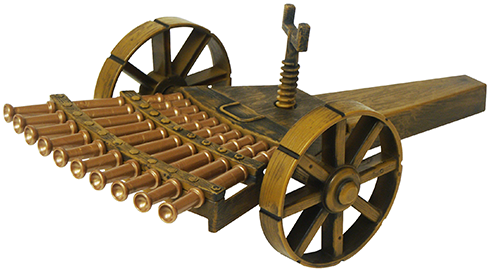
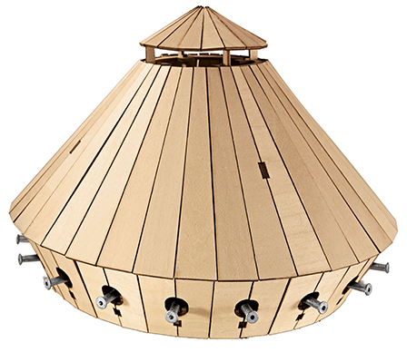
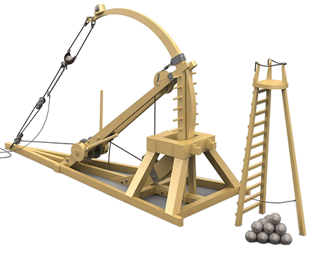

Leonardo da Vinci or simply Leonardo, was an Italian polymath of the Renaissance whose areas
of _ interest included invention, drawing, painting, sculpting, architecture, science, music, mathematics,
engineering, literature, anatomy, geology, astronomy, botany, writing, history, and cartography. He has
been variously called the father of palaeontology, ichnology, and architecture, and he is widely
considered one of the greatest painters of all time.
Leonardo is revered for his technological ingenuity. He conceptualised flying machines, a type of
armoured fighting vehicle, concentrated solar power, an adding machine, and the double hull.
The catalog presents the most successful of his military inventions.

Rapid Weapon
Leonardo paid much attention to the design of automatic firearms. To increase the power and speed of
fire, he fanned out a multitude of trunks.
Amount of trunks
10
/
Defeat range
150m
Armored van
Leonardo da Vinci designed a heavy turtle-shaped van, armed with cannons and armored armor. The movement
of this platform is carried out by 8 people using a gearbox connected to the wheels.
Amount of trunks
8
/
Defeat range
100m


Winch Catapult
The catapult has a flexible shoulder, bending backwards using a hand winch, as well as a bucket, where a
stone is thrown along the ladder. A group of such catapults hitting the enemy at the same time can provide
excellent protection.
Weight of projectile
170Kg
/
Defeat range
300m
Advantages of technology
Diversity shells
Accuracy hitting the target
Strength constructions
Creations of the great genius
Clients Testimonials
The weapons of Leonardo proved to be excellent against the Venetian
league in the battle of Fornovo. We used catapults in defense of heights, which allowed us to easily
drop
the enemy.
Alexander VI
The weapons of Leonardo proved to be excellent against the Venetian
league in the battle of Fornovo. We used catapults in defense of heights, which allowed us to easily
drop
the enemy.
Alexander VI
The weapons of Leonardo proved to be excellent against the Venetian
league in the battle of Fornovo. We used catapults in defense of heights, which allowed us to easily
drop the enemy.The weapons of Leonardo proved to be excellent against the Venetian
league in the battle of Fornovo. We used catapults in defense of heights, which allowed us to easily
drop the enemy.
Alexander VI
Send Pigeon
Leonardo da Vinci | Biography, Art, Facts
What is Leonardo da Vinci best known for?
Leonardo da Vinci was an artist and engineer who is best known for his paintings, notably the (c.
1503–19) and the (1495–98).
His drawing of the Vitruvian Man (c. 1490) has also become a cultural icon. Leonardo is sometimes
credited as the inventor of
the tank, helicopter, parachute, and flying machine, among other vehicles and devices, but later
scholarship has disputed such
claims. Nonetheless, Leonardo's notebooks reveal a sharp intellect, and his contributions to art,
including methods of representing
space, three-dimensional objects, and the human figure, cannot be overstated.
How many Leonardo da Vinci paintings are there?
Leonardo da Vinci's total output in painting is really rather small; there are less than 20 surviving
paintings that can
be definitely attributed to him, and several of them are unfinished. Two of his most important works—the
Battle of Anghiari
and the Leda, neither of them completed—have survived only in copies.
What was Leonardo da Vinci’s personality like?
Leonardo da Vinci was described as having a gracious but reserved personality and an elegant bearing.
He was known to be
fastidious in personal care, keeping a beard neat and trim in later age, and to dress in colorful
clothing in styles that
dismissed current customs. The 16th-century writer Giorgio Vasari indicated that Leonardo cared little
for money but was
very generous toward his friends and assistants. He had an exceedingly inquisitive mind and made
strenuous efforts to become
erudite in languages, natural science, mathematics, philosophy, and history, among other subjects. The
writings in his notebooks
suggest that he may have been a vegetarian, and there is also some speculation that he may have been
homosexual.
What was Leonardo da Vinci’s family like?
Leonardo da Vinci's parents were unmarried at the time of his birth near a small village named Vinci in
the Tuscan region.
His father, Ser Piero, was a Florentine notary and landlord, and his mother, Caterina, was a young
peasant woman who shortly
thereafter married an artisan. Leonardo grew up on his father's family's estate, where he was treated as
a “legitimate” son
and received the usual elementary education of the day: reading, writing, and arithmetic. Leonardo never
married, but he had
many close relationships with other artists and intellectuals as well as with his assistants.
Who was Leonardo apprenticed to?
When Leonardo was about 15, his father, who enjoyed a high reputation in the Florentine community,
apprenticed him to
artist Andrea del Verrocchio . In Verrocchio's renowned workshop Leonardo received multifaceted training
that included
painting and sculpture as well as the technical-mechanical arts. He also worked in the next-door
workshop of artist
Antonio Pollaiuolo , a sculptor, painter, engraver, and goldsmith, who frequently worked with his
brother, Piero.
In 1472 Leonardo was accepted into the painters' guild of Florence, but he remained in his teacher's
workshop for five more years,
after which time he worked independently in Florence until 1481.
What is Leonardo da Vinci best known for?
Leonardo da Vinci was an artist and engineer who is best known for his paintings, notably the (c.
1503–19) and the (1495–98).
His drawing of the Vitruvian Man (c. 1490) has also become a cultural icon. Leonardo is sometimes
credited as the inventor of
the tank, helicopter, parachute, and flying machine, among other vehicles and devices, but later
scholarship has disputed such
claims. Nonetheless, Leonardo's notebooks reveal a sharp intellect, and his contributions to art,
including methods of representing
space, three-dimensional objects, and the human figure, cannot be overstated.
How many Leonardo da Vinci paintings are there?
Leonardo da Vinci's total output in painting is really rather small; there are less than 20 surviving
paintings that can
be definitely attributed to him, and several of them are unfinished. Two of his most important works—the
Battle of Anghiari
and the Leda, neither of them completed—have survived only in copies.
What was Leonardo da Vinci’s personality like?
Leonardo da Vinci was described as having a gracious but reserved personality and an elegant bearing.
He was known to be
fastidious in personal care, keeping a beard neat and trim in later age, and to dress in colorful
clothing in styles that
dismissed current customs. The 16th-century writer Giorgio Vasari indicated that Leonardo cared little
for money but was
very generous toward his friends and assistants. He had an exceedingly inquisitive mind and made
strenuous efforts to become
erudite in languages, natural science, mathematics, philosophy, and history, among other subjects. The
writings in his notebooks
suggest that he may have been a vegetarian, and there is also some speculation that he may have been
homosexual.
What was Leonardo da Vinci’s family like?
Leonardo da Vinci's parents were unmarried at the time of his birth near a small village named Vinci in
the Tuscan region.
His father, Ser Piero, was a Florentine notary and landlord, and his mother, Caterina, was a young
peasant woman who shortly
thereafter married an artisan. Leonardo grew up on his father's family's estate, where he was treated as
a “legitimate” son
and received the usual elementary education of the day: reading, writing, and arithmetic. Leonardo never
married, but he had
many close relationships with other artists and intellectuals as well as with his assistants.
Who was Leonardo apprenticed to?
When Leonardo was about 15, his father, who enjoyed a high reputation in the Florentine community,
apprenticed him to
artist Andrea del Verrocchio . In Verrocchio's renowned workshop Leonardo received multifaceted training
that included
painting and sculpture as well as the technical-mechanical arts. He also worked in the next-door
workshop of artist
Antonio Pollaiuolo , a sculptor, painter, engraver, and goldsmith, who frequently worked with his
brother, Piero.
In 1472 Leonardo was accepted into the painters' guild of Florence, but he remained in his teacher's
workshop for five more years,
after which time he worked independently in Florence until 1481.